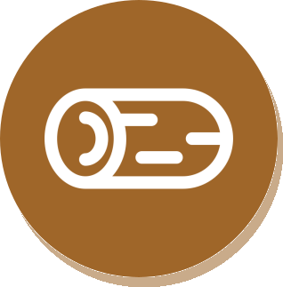

Intro / Objectif du jeu
Soyez le premier à atteindre la France en rassemblant les ressources nécessaires !
Contenu du jeu
Le jeu met en scène des familles ou groupes en parcours, cherchant à s'installer, travailler, se protéger ou reconstruire leur vie en France à différentes époques. Le plateau représente la France à travers les époques et contient des cases terre/mer/événement.
MISE EN PLACE
Au début de la partie :
- 1.Chaque joueur reçoit : 2 bois, 2 nourriture.
- 2.Les territoires de départ sont attribués par tirage au sort parmi toutes les cartes Territoire.
- 3.Chaque joueur place son pion sur son territoire tiré.
- 4.Celui qui s’est levé le plus tôt commence.
Les cartes évènements sont placées face cachée dans leurs piles respectives.
Ressources
Argent
Permet de payer le passeur, d'acheter certains effets et se régénère de +1 chaque tour.
- Échanger contre une autre ressource
- Payer un passeur ou la milice
Nourriture
Consommée tous les 2 tours ; sert à nourrir le groupe et éviter des pénalités.
- Donner 1 nourriture tous les 2 tours
-
Si vous n’en avez pas : prenez 1 Jeton Famine
Vous avez 1 tour pour trouver de la nourriture.
Sinon vous retournez à la case départ.

Bois
Utilisé pour construire un bateau ou réparer un bateau cassé.
- Construire un bateau : 3 bois
- Réparer : 1 bois
BUT DU JEU
Chaque joueur part d’un territoire situé hors de France. Le but est d’être le premier à atteindre la France.
Si un joueur parvient à atteindre la France en remplissant les conditions, il gagne. Les autres joueurs : RIP.
DÉROULEMENT
1. Tour de jeu
Le joueur actif lance le dé. Il peut avancer d’un nombre de cases entre 1 et la valeur obtenue, selon son choix.
Case Évènement
Si s'arrête sur une case Évènement → il doit piocher une carte de la couleur de la case (Vert, Bleu, Noir, Marron, Gris).
Case occupée
Si un joueur arrive sur une case où se trouve déjà un autre joueur → l’autre joueur choisit une ressource à lui prendre.
2. Choix en fonction de la zone
Lorsqu’un joueur arrive devant la mer, il peut choisir :
- Nager
- Payer un passeur
- Crafter un bateau (coût : 3 bois)
- Prendre un autre chemin si le plateau le permet
En mer, si son bateau casse et qu’il ne le répare pas immédiatement (1 bois) : au tour suivant, il choisit un chiffre chance et lance le dé (3 tentatives). S’il ne tombe pas dessus → il doit payer 1 argent, reçoit 1 bois, et répare.
3. Question d’immigration (fin de tour)
À la fin de chaque tour, le joueur doit répondre à une question sur l’immigration :
- Facile → gagne 1 ressource au choix
- Moyen → gagne 2 ressources au choix
- Difficile → gagne 3 ressources au choix
En cas de mauvaise réponse : rien ne se passe.
4. Effets du temps
Tous les 2 tours : donner 1 nourriture et tirer 1 carte Marron.
Chaque tour : le joueur gagne 1 argent.
5. La contrainte spéciale du chiffre 6
Si un joueur obtient 6 : il place la Police Frontière sur le chemin d’un joueur. Ce joueur est bloqué 1 tour et perd 5 ressources. Une carte Évènement peut retirer la Police Frontière.
FIN DE PARTIE
La partie se termine dès qu’un joueur atteint la France en possédant les ressources nécessaires. Ce joueur est le vainqueur. Tous les autres joueurs sont considérés comme RIP.